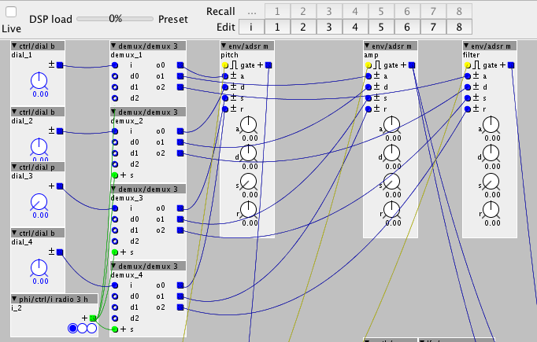
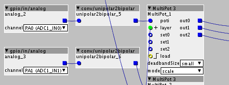

I want to use one ADSR for three different thinks (pitch, filter, amp) but only want to use 4 potis instead of 12. so i want to use double (or trible) occupancy each poti for Attac, Decy, Sustain and Release. At the time my patch looks like this (pic) but every time i switch between the different destination (pitch, filter, amp) the dials jumpt to the current value. I want, that the values of the dials will be remembered.
have anyone an idea how to realize this wish?

Double occupancy of a poti
Nippon
#1
You will have to store the current value in a latch (logic/latch). To trigger the latch, you can use logic/change to monitor the value of the poti and trigger the latch of the currently selected destination whenever the value changed.
{kind=link}
Edit: This may even be better to make sure no latch stays active. Imagine, you switch the destination while the knob is currently turned. In that case, the trigger forwarded to the "old" latch may remain "1" while the new latch is selected, making both latches update themselves constantly.
{kind=link}
Edit 2: I just realize that the latch is sensitive to triggers. What you actually want is a latch sensitive to a positive level. Hmm. Does anyone else have a good idea?
Abhoth
#3
I haven't had a proper look, but is perhaps this thread useful? http://community.axoloti.com/t/latching-values-one-pot-3-functions/2900
Nippon
#5
I found a solution. its a combiantion of @TheSlowGrowth and @Abhoth approach. It works but is very complicated. anyone a simpler solution?
@Ott: i don't understand your hint. Can you explain?
{kind=link}
I quickly programmed an object to control three values with one poti. It can easily be modified to have more outputs (layers), if required.
The object has some features that the other solutions don't have:
- Due to noise in the measurement, there can be value changes even if the potentiometer is not physically touched or turned. That's why I wrote the object so that after some time of inactivity, the pot has to be turned by a certain amount before new changes will be registered. This "deadband" is configurable. (This is a very common method used in many devices)
- You can load initial values (patch changes for example) with a trigger pulse
- The potentiometer response is configurable: After a layer change, the outputs will be updated
A) to the current poti value, immediately when the poti is touched (overwrite mode)
B) to the current poti value, after the poti has passed the current value of the target (pickup mode)
C) so that the remaining travel of the potentiometer spans all the remaining travel of the value (scale mode).
I would appreciate of you could try this out and let me know if it works for you. Then I can put this into the community library. (Do you have ideas for a good object name?)
MultiPot 3.axo (6.3 KB)
{kind=link}
Nippon
#9
now i tried out a lot the multipot object but i do not know exactly what the scale mode does. i get not all values i need. can you explain a bit more?
thanks a lot
TheSlowGrowth
#10
The scale mode is only relevant when you switch the layer while the potentiometers current position doesn't match the value of the layer. It's difficult to describe with words, but once you actually try it, it's super simple to understand.
If you prefer to read an explanation, click here for a lot of text
To give an example: Lets assume that the outputs from the three layers (0, 1 and 2) are currently 20, 34 and 56 respectively. The selected layer is 0. Let's also assume, that the potentiometer is currently turned to value 20, matching the value of the selected layer.
What happens when you switch from layer 0 to layer 2? In any case, the value of layer 2 won't change until you physically move the potentiometer. The three modes determine what the value will be set to when you start turning the potentiometer.
In overwrite mode, when you turn the potentiometer for the first time after the layer change, the output of layer 2 will immediately be set to the potentiometers current position. In our example, the output of layer 2 was 56 and the potentiometer was set to value 20 before the layer was switched. Once you touch the potentiometer and turn it to value 21, the output of layer 2 will jump from 56 to 21 instantly.
In pickup mode, when you turn the potentiometer for the first time after the layer change, the output of the layer won't change until the potentiometer is turned to the value of this layer. In our example, you will have to move the potentiometer to the value 56. Once you reach that value, you will be able to modify the value of layer 2. This prevents sudden jumps in the value of layer 2.
In scale mode, the remaining travel of the potentiometer in both directions will be mapped to the remaining travel of the value. That means: If you start turning the potentiometer clockwise, the value of the selected layer will increase so that once the potentiometer reaches its maximum position, the layer will also have reached its maximum value. If you turn anti-clockwise the same applies: The value will decrease, reaching 0 when the pot reaches its minimum position. In our example, the value is 56 and the potentiometers position is 20. That means, when you turn the potentiometer clockwise, moving the potentiometer from 20 to 64 will change the value from 56 to 64. turning the potentiometer anti-clockwise from 20 to 0 will change the value from 56 to 0. That means that the value will decrease much faster than it will increase. But this mdoe has the advantage that it avoids both sudden jumps in the value (as happens with the overwrite mode) and "dead zones" (as happens with pickup mode)
Nippon
#11
thank you for the detailed explanation. i think i understood it right but it does not work in my case. i like this feature and want absolutely to use this. could it be that it does not work for bipolar input values? (-64 to 64).

TheSlowGrowth
#12
ah, that is the issue. The scale mode assumes 0-64 values as that is what the analog inputs provide. You can simply put the unipolar2bipolar object behind the MultiPot 3 object
Nippon
#13
yes i did this. sadly i need three times more of the unipolar2bipolar blocks.
but now it works fine. i like the idea of the scale mode a lot. never saw this before in an other device.
great work.
TheSlowGrowth
#14
I took the idea from Mutable Instruments Clouds, where the Blend knob works that way